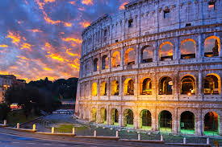

Londres (Reino Unido)

Londres é um mundo em si. Abriga os cartões-postais como o relógio mais famoso do mundo.
Roma (Itália)
Com quase 3.000 anos de idade, Roma é cidade com um grande conjunto de arte, cultura e arquitetura à céu aberto.
Abriga diversos pontos históricos imperdíveis como o Coliseu, Fonte de Trevi, Panteão, além da cidade do Vaticano
Ilhas Maldivas (Maldivas)

As Ilhas Maldivas são um conjunto de mais de 1.000 ilhas, localizado no Oc eano Índico. O país é conhecido pelos recifes de corais, areia clara e água azul turquesa
Nova York (Estados Unidos)
A cidade que nunca dorme é conhecida pelas luzes da Times Square, o parque Central Park, o edifício Empire State Building e a Estátua da Liberdade.
Grand Canyon (Estados Unidos)
As icônicas formações naturais de rocha vermelhas, possuem mais de 445 de km de comprimento e 1,6km de profundidade, sendo percorrido pelo rio Colorado.